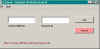

Status of an Async Request,
com.tymeac.client.jframe.TyReqStatus
This frame class displays the status of an Asynchronous Request. See also the Stalled display for ways to deal with those requests that are
stalled.
The non-frame version of this class is TyReqStatusClient, below.
 (click to link to full image)
Elements
Tymeac MilliTime -- MilliTime is the time in milliseconds since 1970
when the Tymeac Server started. This value is printed/logged at Tymeac start up and shut down. This
value is returned to the requestor of an Asynchronous Request along with the request id,
below. This element is necessary to insure that the Tymeac Client and Server
are coordinated.
Request Id -- This value is returned to the requestor of an
Asynchronous Request along with the MilliTime, above. This is a sequential number,
from 1, incremented for each request since Tymeac start up.
Buttons
GET -- Passes the request to the Tymeac Server and displays the Msg,
below.
CANCEL -- Passes the request to the Tymeac Server and displays the
Msg, below.
A cancel request may only succeed when either no Queue Threads have started to process
the Function or the Function is in-progress. There is no way to interrupt the Output Agent
processing.
Message Block at bottom : -- This is an information message. The
Bold number in parenthesis does not appear in the message. It is the return integer
from the Class, TyReqStatusClient, below:
Connection failure -- (-1) The RMI connection failed or the
Tymeac Server returned an invalid message.
Tymeac shutting down -- (4) Tymeac Server is in shut down mode.
Tymeac MilliTime is not a valid number -- Not a number.
Request Id is not a valid number -- Not a number.
Request Id is invalid this session -- (3) The request is
greater than the highest used number so far.
Tymeac MilliTime mismatch with current session -- (5) The
MilliTime does not match the current Tymeac start up time.
Request is stalled -- (6) As indicated. Use the Stalled display for more information and ways to deal with this
request..
Request is not in the system -- (7) The request finished.
This does not imply success or otherwise.
Request is awaiting execution -- (8) The request was found in a
Wait List with no Queue's finished processing.
Request is executing at OA stage -- (9) The request
finished processing in all the Queues for the Function. The last Tymeac Queue Thread
to finish schedules the Output Agent Queue. It is at this stage: scheduling or
executing.
Request is executing -- (10) The request is executing in at
least one of the Queues for the Function.
Request cancelled. No processing took place. -- (11) The cancel
request was successful. All the pending requests were removed from the waitlists before
any Queue Thread could process them.
Request cancelled. Was in progress." -- (12) The cancel
request was successful. At least one Queue Thread picked up the request before it could be
flushed. This request may show up in the Stalled List since
the resources could not be freed.
com.tymeac.client.TyReqStatusClient (JavaDoc)
This is the Non-GUI equivalent of the GUI Class, above. An example of how to use this
class is: com.tymeac.demo.TyDemoClient_ReqStatus.java in the
<TymeacHome>source/com/tymeac/demo directory.
Constructor 1 -- has no arguments. This is for the RMI Server. The constructor gets a
new instance of a Tymeac internal class that is similar to TySvrComm
Constructor 2-- is for the internal server. The single argument is the Tymeac
Server Interface, TymeacInterface.
Instance Methods --
int getStatus (long MilliTime, long Request_Id)
Both parameters are long integers, returning an integer: The bold number in
parenthesis in each message, above, is the value of that integer.
For example:
int status = new TyUserStatus().getStatus(MilliTime, Id);
switch (status) {
case -1: .............. }
This is demonstrated in the sample Class, TymeacClient_getStatus
int cancelReq (long MilliTime, long Request_Id)
Both parameters are long integers, returning an integer: The bold number in
parenthesis in each message, above, is the value of that integer.
For example:
int status = new TyUserStatus().cancelReq(MilliTime, Id);
switch (status) {
case -1: .............. }
This is demonstrated in the sample Class, TymeacClient_ReqCancel
| {kind=link}